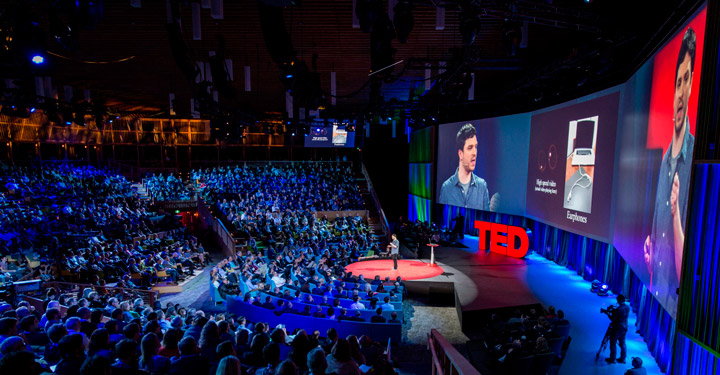

Ted Talks
Um pouco sobre
TED Palestras: O que é? O acrônimo TED vem de Technology, Entertainment and Design. Ou seja, ele personifica o que há de mais relevante nessas áreas. Na prática, trata-se de um ciclo de palestras e encontros em que nomes de referência em diversos campos do conhecimento são convidados a expor suas ideias.

TED é uma organização sem fins lucrativos com o objetivo de compartilhar ideias por meio das talks, ou, em português, conversas. As talks são um modelo de palestras mais curtas e eficazes para chamar a atenção para um único tópico
As palestras TED são conhecidas por sua duração limitada, geralmente variando de 5 a 20 minutos, o que as torna acessíveis e impactantes. Esse tempo curto é projetado para manter a atenção do público e transmitir informações de forma clara e concisa. Desde sua fundação, o TED evoluiu para incluir uma ampla gama de tópicos, abrangendo áreas como ciência, política, educação e arte, refletindo a diversidade de vozes e experiências dos palestrantes, que vão desde cientistas e artistas até ativistas e empreendedores.